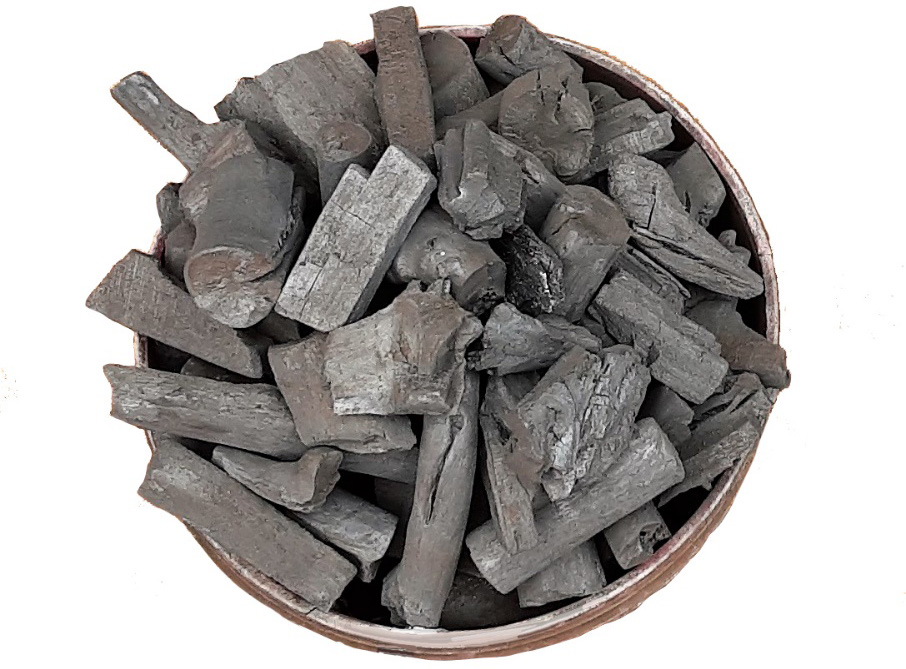

Figure 2.37: Ordinary charcoal
Drawing with ordinary charcoal is not only attractive but also less expensive compared to the modern one obtained in art material shops.
Using charcoal to draw precisely, artists have to go through the following steps:
Material preparation:
Charcoal has to be well prepared by categorising them based on their hardness levels for easy working.
Other materials related to drawing like drawing paper, eraser, sharpener and fixative also need to be prepared.
Subject to be drawn:
You need to understand well the subject you wish to draw or request this from your art teacher.
Sketches creation:
The hard charcoal draws lighter lines which can be easily removed when needed.
Detail application:
Add detailed features to the drawn subject and clear all unnecessary sketches ready for the next stage.
For detailed application, use soft charcoal.
The soft charcoal will work well because of its dark tone.
Shading application:
To give the subject an illusion of depth.
Use any shading techniques and any type of charcoal which you find useful.
However, it is recommended to stick to one shading technique for a single subject.
Final touches application:
Clear any unrelated marks from the drawing.
Apply fixative spray all over the drawing for the charcoal to set together and leave it to dry.